John Yandell-Modern Tennis Forehand-Where Are We Now-Part 2¶
Modern Tennis:\ Where Are We Now?
\ The Forehand Part 2
John Yandell
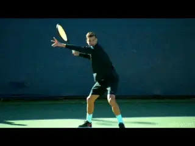
Let's look at how to develop a great forward swing.
So in Part 1, we looked at the fundamentals of preparation including the body turn, the coiling in the stances, and the elements of a compact ATP backswing and the relationship between the positioning of the hand and the racket tip, depending on grip. Although there are many elements in pro forehands that don't apply at all levels, I said that the modern players actually provide the best possible models for the core fundamentals in preparation---even stronger than the so-called old school classical players.
We also addressed some bad ideas--though unfortunately widely disseminated--regarding the timing of preparation, the angle of the racket face, and the inferiority of fully open stances. link
Now let's look at the core elements in forward swing on a basic forehand power drive. And the conclusion is the same. As with preparation, if you know what to look for and what to develop, elite pros provide the best possible models as well in the forward swing for maximizing power, spin, and consistency in your forehand.
Hitting Arm Structure
Let's start with what happens from the top of the backswing. As the racket, hand and arm descend, they come back slightly to the inside, and the player sets up the hitting arm structure.
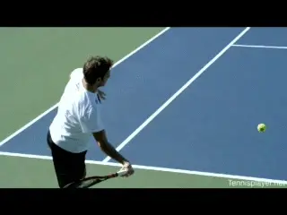
The bent arm and the straight arm variations.
There are two basic variations in the hitting arm shapes--the bent elbow and the straight elbow. The bent elbow means that the elbow is bent in toward the torso. The exact shape, the angle of the bend, and the distance from the body varies somewhat with the grips, the length of the player's arm, and preference.
A few examples of bent elbow forehands are: Andre Agassi, Novak Djokovic, Stan Wawrinka, and Jack Sock. Agassi's grip is milder with less bend, Novak more, and Sock with his hand fully under the handle, the most.
With the straight arm the elbow straightens out so there is a more or less straight line from the shoulder to the hand. This is the configuration used by Roger Federer, Grigor Dimitrov, Juan Martin Delpotro and Rafael Nadal.
Is one superior to the other? According to Brian Gordon, it's the straight arm. The contact is further in front than the bent arm and the straight arm allows more independent forward and upward arm movement in the forward swing.
As part of the obsession with the ATP forehand, the straight hitting arm configuration has become a virtual internet sacrament. Read the message boards, go on YouTube, and coaches and club players will advocate it as an absolute necessity for any player who wants a "pro" forehand.
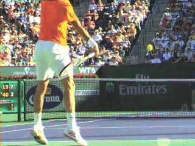
The straight arm may have biomechanical advantages at the highest levels.
Most of these experts/advocates couldn't rally with Agassi or Djokovic, or the vast majority of women pros who hit the double bend almost exclusively. Most of them probably don't even hit with straight arms.
Is a straight arm really some critical component of a great forehand? Not really. But zealots believe what zealots believe. Brian Gordon himself makes a point of saying how much more difficult it is to master and to time. He is training elite juniors to hit it with amazing results. But these kinds of kids have actual ability and are training hours a day.
For the vast majority of players, the vast majority of whom have huge, basic technical problems in their forehands, the straight arm is the last element they should be thinking about instead of the first.
In my experience the great majority of players are natural bent arm hitters. Some of greatest forehands in tennis have been and are bent elbow. My belief is that first you focus on the preparation. Then you master the fundamental elements of the forward swing we are looking at here.
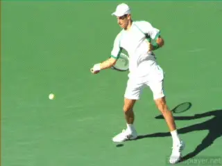
The majority of forehands even in pro tennis are bent elbow.
Then take a look. If those fundamentals are excellent you may find you have naturally developed the straight arm---or not. If not and you want to experiment from there with the straight arm, go for it. But it's used by a small percentage of the players that I have ever filmed---not just club players, but elite juniors, college players, and touring pros.
One alternative if you have the deep need to develop it is move to Florida and train with Brian. People have!
Hand and Racket Height
Regardless of hitting arm shape, the next question is where are the hitting arm and the hand and the racket in relation to the height of the oncoming ball?
How low does the hand drop? A standard cliché is drop the hand "well" below the level of the ball so you swing "low to high." But how accurate is that?
The fact is that the hand drop can slightly or a most a few inches below the ball. But sometimes it doesn't drop below it at all. Hard to believe but it's true.
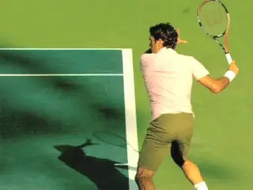
The hand drops at most only slightly below the ball.
I wrote about this in detail in an article called Myths About Low to High in the Modern Forehand. link As with so many things these elements are impossible to see without high speed video.
The hand itself can be slightly below the ball, but it can actually be slightly above the ball as well. How is that possible? The answer lies in looking at the height of the racket head.
In some cases, it's backward rotation of the arm not the hand drops the racket head, so that the tip points at a downward angle at the court. The racket head in fact can be a few inches or even a foot below the ball when players use this backward rotation.
But this only happens when players are using more extreme versions of the so-called windshield wiper---they rotate the arm and racket backwards from the shoulder to set up additional forward rotation on the way to contact and then out into the followthrough.
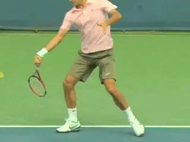
When there is backward rotation in the wiper, the hand can actually be slightly above ball level.
So what you don't want to do is artificially drop the hand and destroy the hitting arm shape in a quest to hit "low to high." But really you don't have to think about it. From the outside backswing position we described in Part 1, probably the best key is just to pull the hand forward with the idea of hitting up and out to the extension position on a power drive.
Extension Position
And what is that finish position? I summarize it in my forehand article in Ultimate Fundamentals section. link But let's understand it in more depth by looking at the entire path of the forward swing.
In the forward swing the hand and racket move in three directions--upward, outward, and also across. It's a three dimensional curve.
The racket and hand start forward from close to the body and move at first outward from the player's right to the player's left, in other words, inside out toward the contact. At the same time they are moving upward, driven by the path of the hand and/or the forward rotation in the windshield wiper.
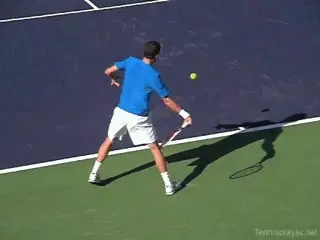
The hand and racket move on a 3D curve from the players left to right, upward, outward, and also back to the left.
At some point around the contact, the curve changes and the hand and racket start to come across the body, moving from the player's right back to the player's left. At the same time the racket is still moving upward and outward or forward toward the opponent. Again, a curve with movement in three directions.
The extension of the forward swing happens when, more or less, the hand reaches eye level, and at about the same time reaches the left edge of the torso. The third check point is the spacing. The hand on a power drive is usually spaced about 2 feet in front of the plane of the torso. It's similar for both hitting arm styles, though it can be more on the straight arm forehand.
Another common internet idea is that the secret to the modern forehand is to emphasize the motion of the hand and racket to the player's left across the body, starting before the contact. "Pull the racket sharply across before the contact and bend the elbow sharply as well." Or something like that.
Not true. The hitting arm structure in both versions keeps its basic shape far out into the forward swing toward the extension point.
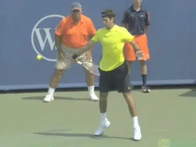
Hand at about eye level, even with the left side, great spacing from the torso---the checkpoints for extension on the power drive.
What About the Wiper?
The wiper is an added complexity in trying to understand the stroke. In modern tennis, when the top players reach the extension point on a power drive, they almost always have wipered or rotated the hand arm and racket to some greater or lesser extent. When this rotation is maximized the racket tip can be pointing directly at the sideline.
Yet regardless of the amount of wiper, the swing has extended according to the key checkpoints including, great spacing between the torso and the hand. Compare this to the so-called classical forehand, where the racket stays mostly "on edge" through the extension pointing directly or mostly upward. To find pro players who used this simpler forward swing pattern you have to go back to players like Pete Sampras or Tim Henman, or even Andre Agassi on many balls.
The rise of the universal wiper rotation---along with poly strings---explain the rise of astronomical spins levels in pro tennis. Players with more traditional forward swings generated only about 2/3s the forehand spin---say 2000rpm versus 3000rpm on average.
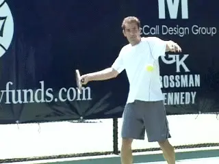
You have to go back to the Sampras era to find a lot of on edge finishes.
The "flatter" swings were traditionally associated with more conservative grips---eastern to mild semi-western. Roger Federer turned this upside down when he married a slightly modified eastern grip with the full range of wiper actions, wipering to some degree on virtually every ball, although you see him coming through with more on edge finish on returns.
But for players who are significantly more underneath the handle, the wiper finish is an inherent part of the forward swing, and in fact it's necessary to get the racket all the way to the extension checkpoints we've outlined. That was true of the first heavy spin players like Sergi Bruguera and still is.
One of the related things that causes confusion is the huge variety in the forward swing depending on the ball. The hand and elbow can and do come across faster. The hand can finish lower and with less extension. The wiper action can happen faster or slower and be more or less extreme. The elbow can bend more or less and bend sooner or later.
These factors come into play with shorter balls, deeper balls, wider balls, lower balls and when the play is trying to hit with a certain shot shape---more arcing, deeper more angled, shorter more angled, with more or less spin and more or less speed.
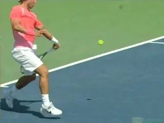
Depending on the ball and the shot intent the wiper can happen faster with less extension.
I've detailed the relation between all these factors in an article in the Advanced Tennis section. link But the key in developing a power topspin drive is understanding what's more basic and what is a variation.
How does any of this apply to you? It depends on your grip. As we saw in the first article, an easternish grip is usually best suited to the type of ball most players see most of the time. And like Federer, this grip gives you the option to wiper or rotate to a wide variety of extents---or not. But if you are higher level or have a more extreme grip that finish will be more inherent even in power drives with full extension.
The Wrap
But wait. How can the forward swing "finish" at extension when it continues to move or "wrap," either back over the shoulder, or around the shoulder, or even around the upper torso? One of the mantras in junior coaching is in fact, "show me the butt of the racket" which supposedly indicates the player had fully wrapped and therefore hit a modern forehand with maximum acceleration.
The problem is the so-called wrap is the final stage in racket deceleration. Not acceleration. If you hit a 90mph forehand your racket is probably traveling something like 60 mph at contact. By the time it reaches the end of the wrap it's going about 5mph.
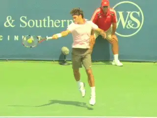
The wrap is the final deceleration phase after extension.
If you swing to extension and make the checkpoints, you will naturally decelerate or wrap. It would be dangerous probably not to.
Years ago I wrote an article distinguishing this natural wrap and natural deceleration from the "mechanical" wrap. link What it showed was that players often don't make the extension point when they are concentrating on forcing the wrap. Instead of maximizing acceleration, they were actually limiting it.
There is a reason great players extend on power drives. That outward extension creates maximum racket head speed at contact. But that extension is impossible or difficult to see without high speed video. What the naked eye can see is the wrap, when the racket speed has decelerated exponentially.
Lag and Snap
So speaking of acceleration let's address another horrible internet myth: "lag and snap." Again this is a prevailing view on the internet, and I have written extensively about why it's a fatal impediment to developing a great forehand. link
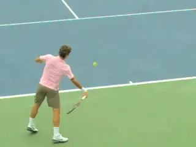
The wrist flex is impeded to control the shot line.
The idea behind "lag" is that players intentionally somehow delay the racket head at the start of the forward swing, causing the wrist to lay back. In fact with eastern and mild semi-western grips this happens naturally as the racket and arm flip in the backswing and start forward---assuming your hitting arm is at least somewhat relaxed.
As for "snap" it doesn't happen at all. Brian Gordon's research has shown that players are actually impeding the forward flex of the wrist to control the angle of the racket head to create the intended shot line.
Yes with the less extreme grips the wrist usually comes forward. But on the vast majority of balls it is still laid back before contact, at contact, and well after contact. You can see exactly how this works and what the differences are by comparing forehands hit inside out and inside in. The slight differences in the angle of the wrist correlates directly to the differences in the shot lines.
And on the super extreme grips like Jack Sock, the concept of lag and snap totally falls apart. With the hand all the way under the handle, the racket lies across the palm. There is no wrist lay back---no lag.

You can't "snap" the wrist with the hand all the way under the handle.
Although I also hear people all the time talk about how Sock "snaps" his wrist, he doesn't do that either. You can't snap the wrist forward if it's not laid back. In fact, Sock's wrist stays at virtually the same angle all the way through the forward swing. The massive power and spin result from the upward and outward motion to extension in the swing and his massive wiper.
Key Moment
Which brings us to the key moment in the swing---contact. If we look at contact across the grips, the commonality is where it occurs in the body rotation. That's almost always in the middle, when the torso has completed half the forward rotation.
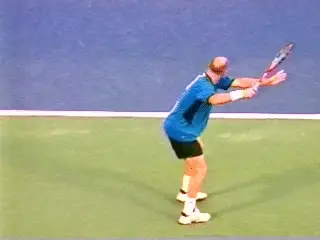
Compare the amount of torso rotation and the angle of the shoulders to the baseline at contact.
The shoulders in pro forehands rotate up to 180 degrees in the forward swing. The contact is halfway in between. This means the shoulders are usually parallel to the baseline. With more "classical" swing patterns---especially with neutral stances-- it's around 90 degrees of total forward rotation. This means the shoulders are about 45 degrees to the baseline at contact.
And where are the hand and racket in relation to the body? To the side obviously and in front. But these distances happen naturally and automatically as a function of hitting arm style. Straight arm, usually slightly further away from the body and slightly more in front. Bent arm, a little less in front and a little closer in.
Knowing these relationships though is mostly academic. Again, the exact position is the consequence of the hitting arm shape and the motions upward, outward and across in the forward swing.
Although it sometimes helps to model the contact to see where it is and even visualize it on the continuum of the swing, in general I believe that if you have the preparation right and the extension right, the contact point basically will be right as well.
Video demonstration — the original video for this article was hosted on TennisPlayer.net.
Look at the two key positions again on this gorgeous, perfect Dimitrov forehand.
So?
So after all that discussion and complexity and controversy we get back to two simple points. Develop great preparation as described in the first article (Again, link Develop great extension as described here. Develop a clear feeling and a clear mental image of both with the checkpoints. You will have a great forehand---classical, modern, or in between.
It's great to know what to focus on, but also to what not to focus on---in fact it's the whole magic. In the next article we will see exactly how that works for a couple of players I've worked with recently---one purely classical and one fully modern. Stay Tuned!

John Yandell is widely acknowledged as one of the leading videographers and students of the modern game of professional tennis. His high speed filming for Advanced Tennis and TPA have provided new visual resources that have changed the way the game is studied and understood by both players and coaches. He has done personal video analysis for hundreds of high level competitive players, including Justine Henin-Hardenne, Taylor Dent and John McEnroe, among others.
In addition to his role as Editor of TPA he is the author of the critically acclaimed book Visual Tennis. The John Yandell Tennis School is located in San Francisco, California.